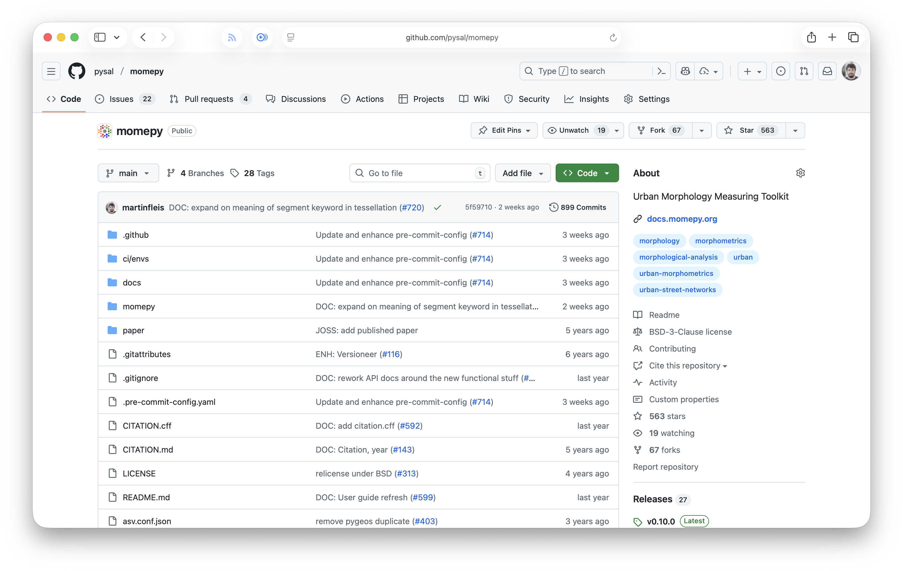
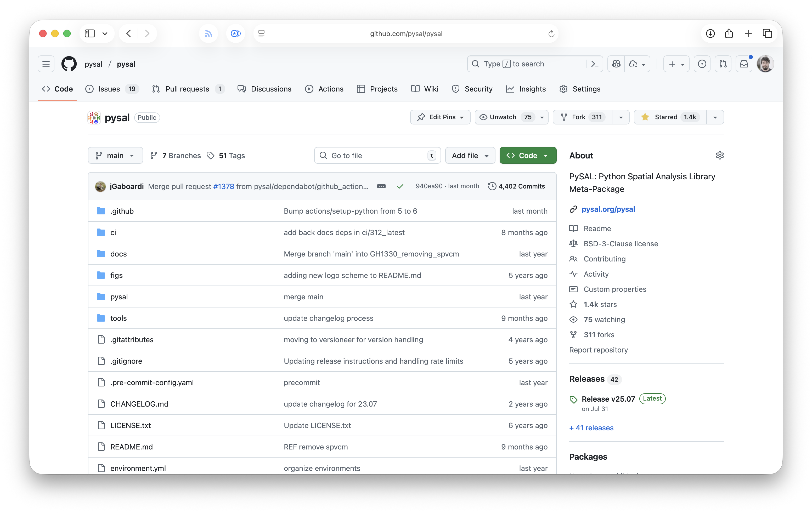
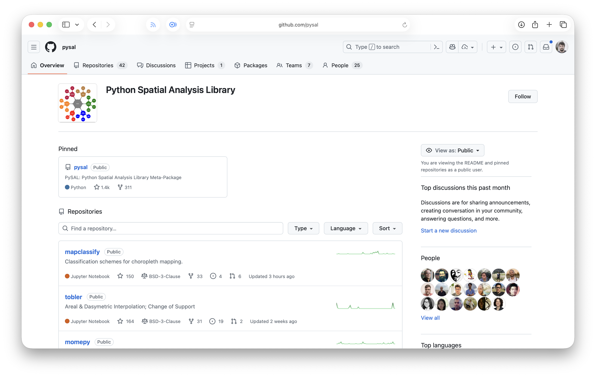
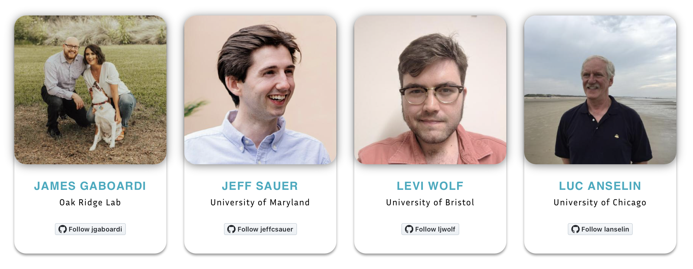
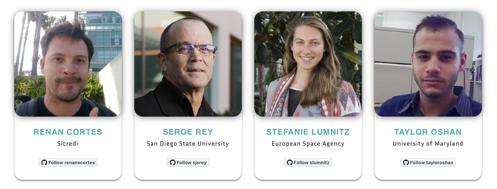
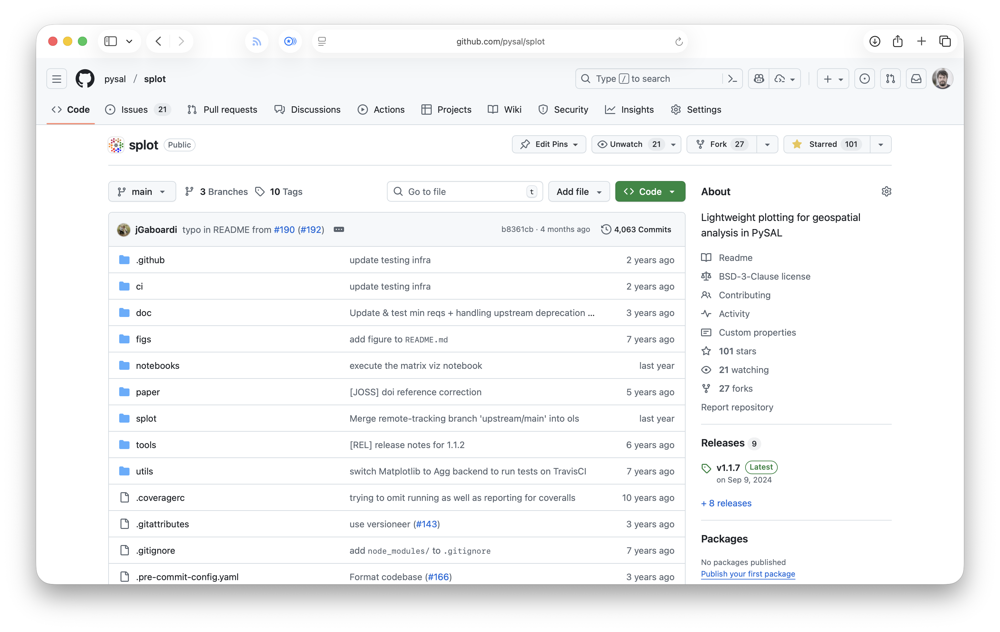
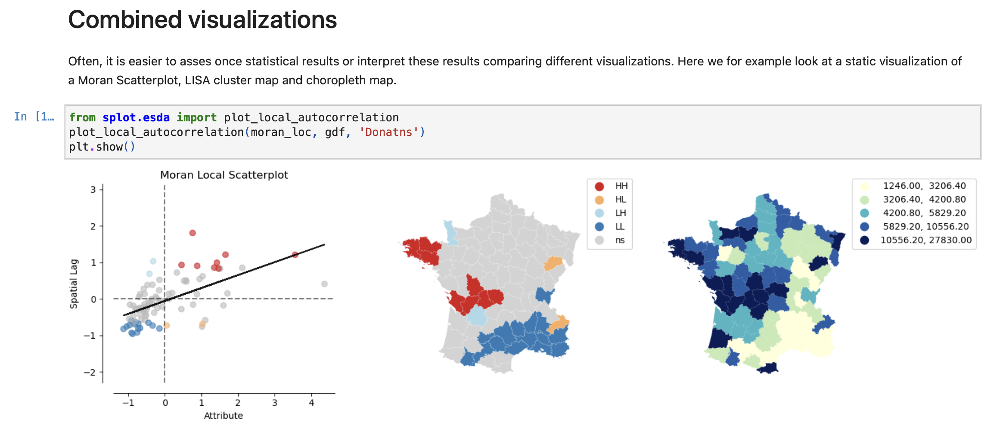
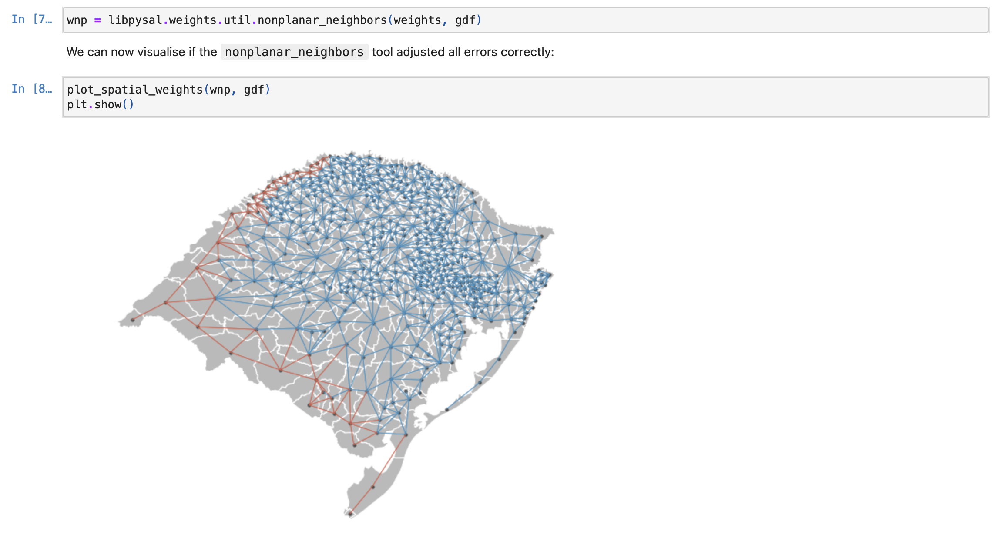
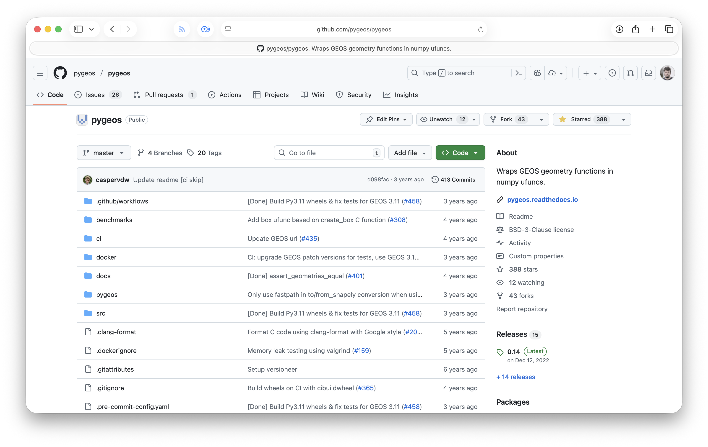
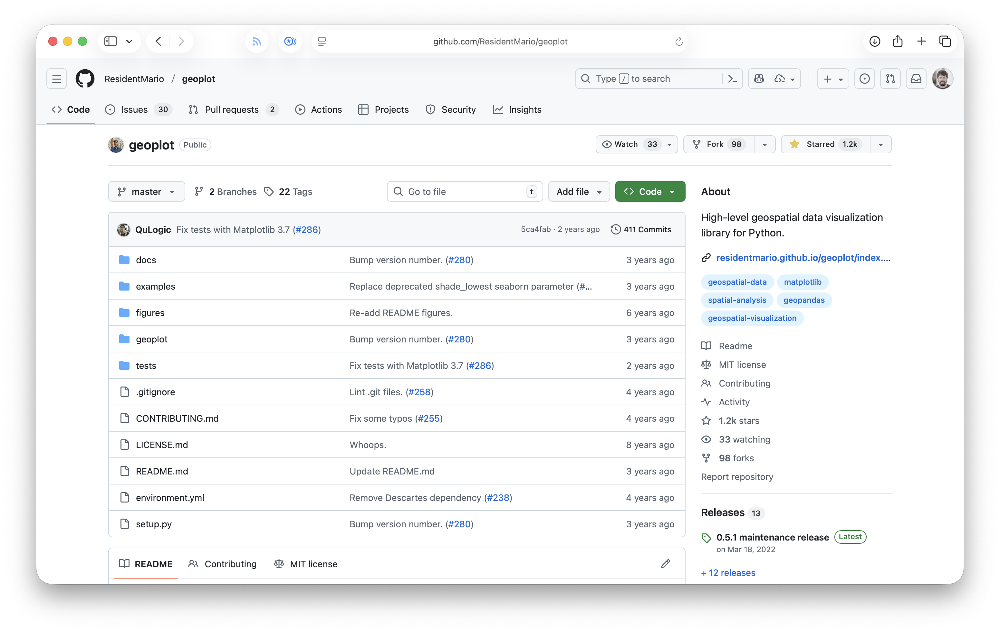

Open source inside out
Charles University
momepy geopandas xyzservices neatnet libpysal
pyinterpolate xvec clustergram contextily spopt
geoplanar dask-geopandas mapclassify pointpats
shapely giddy inequality esda splot folium tobler
branca pyogrio mgwr osmnx spaghetti spherely
access matplotlib pandas holoviews geoplot
greedy topojson legendgram movingpandas
I might have a problem…
What is open source
free open source software
Free
Think free as in free speech, not free beer.
Richard Stallman
FOSS is inherently political.
FOSS is also very diverse.

How did I get there
2011


2016
QGIS is your friend


Though analytics is still marginal


yet, there were some hints of the future


2017
Enrolled in a PhD programme
The Urban Atlas
How am I going to do this???
I got 0 skills I need.


momepy was born that day

a tool I needed myself
shared in the open

I made some mistakes
I fixed them over the years
none of the code written for 0.1 would run today
2018
“Hey, this does not work.”
“I want to do this.”
“This is how you do that.”
2019
Hi Martin,
I have a question for you: would you like to become a “core developer” of GeoPandas?
are you insane?
that is how I got in FOSS
Inside of FOSS
momepy

A toolkit for urban morphology in Python.
An outcome of my PhD.
Motivation
Science
Life of a project
Bus factor
Joining PySAL federation in 2021
Who
Martin
Martin + James (maintenance)
Martin + Krasen + James (maintenance)
Current status
Actively developed
Reaching stability
Planned 1.0 (stable) release
PySAL


Python Spatial Analysis Library
A federation of scientific packages.
Motivation
Science
Life of a project
± 20 years ago
Rey and Anselin created PySAL as a single package
Support for development through scientific grants
Split into a federation 2018
PySAL 2.0
Who
Who
Who
Who
Current status
Actively developed
Stable
Strong developer base
Archival of some subpackages
splot

Lightweight plotting for geospatial analysis in PySAL
Google Summer of Code project
Motivation
Science visualisation (nice to have)
Life of a project
Stefanie Lumnitz released 1.0 in 2018
Search for a maintainer
Decision to archive in 2025
cut into pieces and distribute them


Who
Current status
Scheduled for archival with a deprecation period
Functionality moved elsewhere, but with a different API
pygeos

C/Python library with vectorized geometry functions
Replaced Shapely to become Shapely
Motivation
Performance
Life of a project
2019
Shapely is a bottleneck
Let’s wrap GEOS to keep loops in C
Optionally supported in GeoPandas in 2020
Shapely was no longer needed
Huge transition effort would be needed
PyGEOS merged into Shapely in 2021
Shapely 2.0 was PyGEOS with backwards compatibility
merge into another project
Who
Current status
Code consumed by Shapely
PyGEOS no longer maintained
geoplot

High-level geospatial data visualization library for Python
Abandoned
Motivation
Cool visualisation
Life of a project
Released in 2017 by Aleksey Bilogur
Part of GeoPandas documentation since 2018
Discussion to merge with the GeoPandas project
abandoned in 2022
code no longer works*
Who
unresolved bus factor
geoplot lacked contributors
A contributor
someone who writes code
not only
A contributor
Development
Maintenance
Documentation
Discussion
Q&A
Proposals and ideas
Triage
Teaching
Bug reports
Community management
Blog posts
…
are you a contributor?
why not?